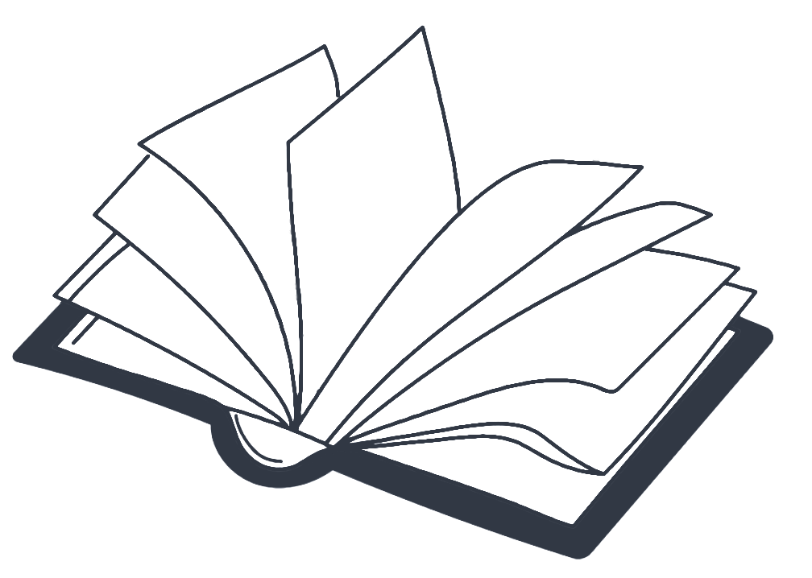
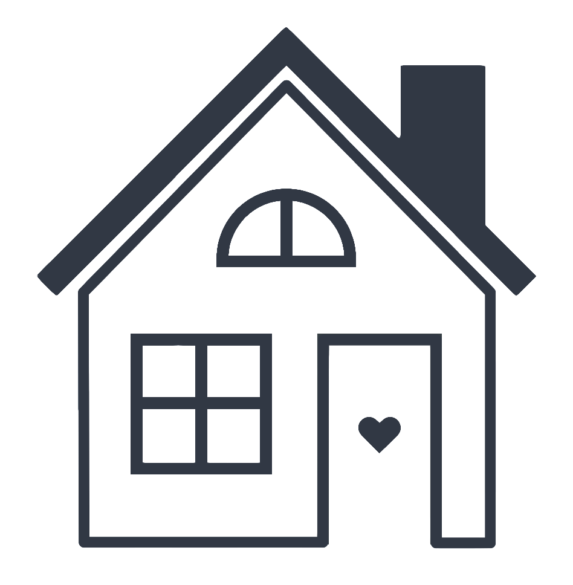
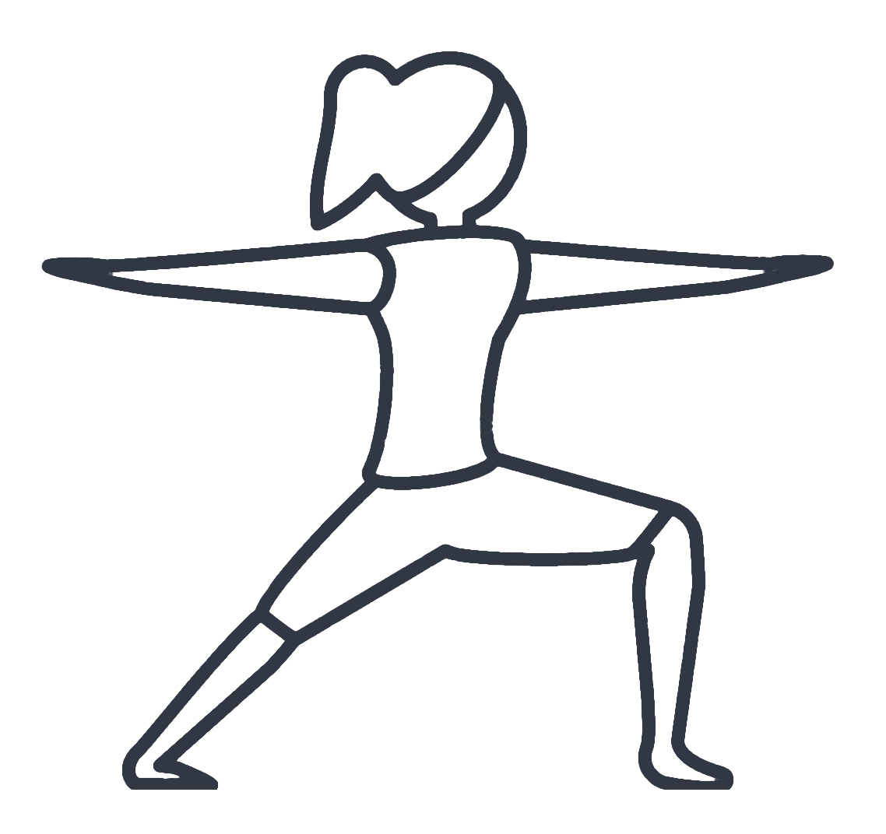
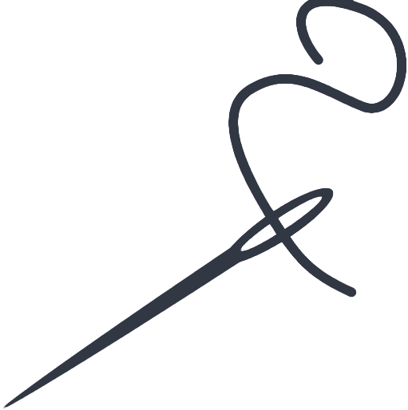
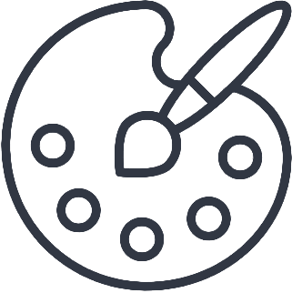

- 1300 Limal
- +32 475 86 57 47
- elisepourtois.pro@gmail.com
- be.linkedin.com/in/epourtois
- github.com/eliseprts
- Permis B
- BEPS (Croix Rouge de Belgique)
Compétences
- Communiquer
- Enseigner, animer
- Rédiger
- Créer du contenu
- Gérer un projet
- Analyser et synthétiser
Outils
- Microsoft Office
- Photoshop (bases), Canva
- Réseaux sociaux
Langues
- Néerlandais B1
- Anglais B1





Expérience professionnelle
Médiatrice chargée de projet
PointCulture asbl • janv. 2020 - oct. 2021
- ✔ Coordination des évènements et des partenariats pour le PointCulture Louvain-la-Neuve
- ✔ Création de contenu pour les réseaux sociaux et le site web
- ✔ Animation d'ateliers créatifs parents-enfants
Animatrice pédagogique
Musée de la Banque nationale de Belgique • déc. 2017 - nov. 2019
- ✔ Visites guidées à destination d'un public varié
- ✔ Réalisation d'outils pédagogiques
- ✔ Organisation et promotion des activités ponctuelles
- ✔ Création de contenu pour les réseaux sociaux et le site web
Assistante communication (stage)
Service Culture de la Ville de Bruxelles • avril - juil. 2017
- ✔ Création de contenu autour de la dentelle de Bruxelles pour le Musée Mode & Dentelle